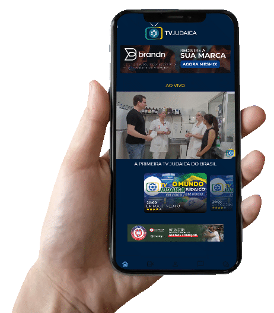

Cultura, tradição, sionismo e combate ao antissemitismo por meio da informação, educação e representatividade.
Assistir Agora
A primeira televisão judaica do Brasil
Nossa comunidade cresce a cada dia — já são mais de 25 mil instalações, mais de 17 mil horas assistidas e uma audiência média diária superior a 3 mil usuários simultâneos. Agradecemos profundamente a cada espectador: é por vocês que seguimos ampliando nossa programação e fortalecendo nossa missão.
Empresas e parceiros que acreditam na missão da TV Judaica ajudam a levar cultura, informação e valores para milhares de espectadores todos os dias. Se sua empresa deseja apoiar este projeto e fortalecer a presença da cultura judaica na mídia, será um prazer tê-lo conosco.
Sua marca pode estar presente em nossa programação e alcançar uma audiência qualificada e engajada. Entre em contato conosco para conhecer as oportunidades de parceria.
contato@tvjudaica.com +55 (11) 9 9017-1621
A comunidade da TV Judaica cresce a cada dia com conteúdos que conectam cultura, história, espiritualidade e atualidade. Explore nossas playlists e faça parte deste movimento de conhecimento e conexão.
A TV Judaica é a primeira televisão judaica brasileira, criada com o propósito de preservar, divulgar e fortalecer os valores do judaísmo, da cultura e tradição judaica, e do sionismo em toda a América Latina.
Nosso canal é uma ponte entre gerações, um espaço de voz e pertencimento para a comunidade judaica, e uma ferramenta de combate ao antissemitismo por meio da informação, educação e representatividade.
Mais do que um projeto de comunicação, a TV Judaica é um tributo criado em memória de Marcel Hollender (Z”L), um visionário apaixonado pela sua identidade judaica e comprometido com o futuro do nosso povo.
Cada programa transmite a missão de manter viva a chama do judaísmo, promover o amor por Israel e construir um espaço onde a cultura judaica seja celebrada todos os dias.
Conteúdos educativos sobre tradição, história e valores do judaísmo.
Fortalecimento da identidade judaica e celebração da cultura.
Informação e representatividade como ferramentas de transformação.
Empresas e organizações que anunciam na TV Judaica ampliam sua presença em uma audiência qualificada e engajada. Nossa programação conecta cultura, informação e valores a milhares de espectadores diariamente.
Se sua empresa deseja divulgar produtos ou serviços para uma audiência relevante e comprometida com cultura e informação, entre em contato conosco para conhecer nossas oportunidades de publicidade.
contato@tvjudaica.com +55 (11) 9 9017-1621